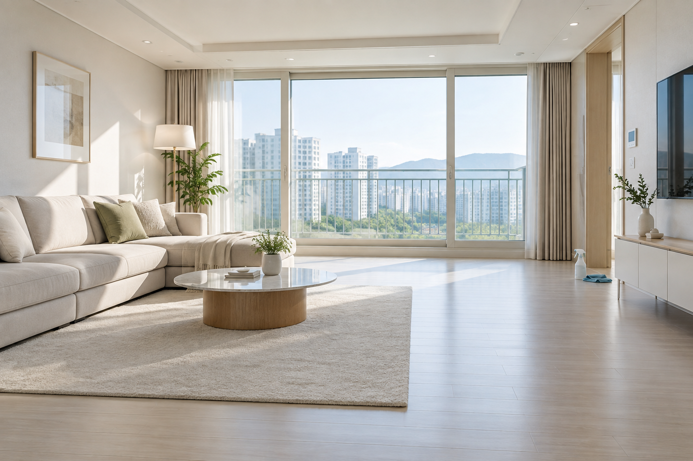
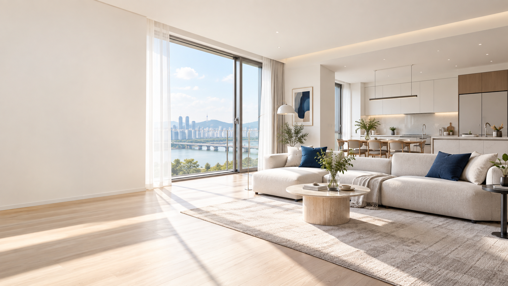
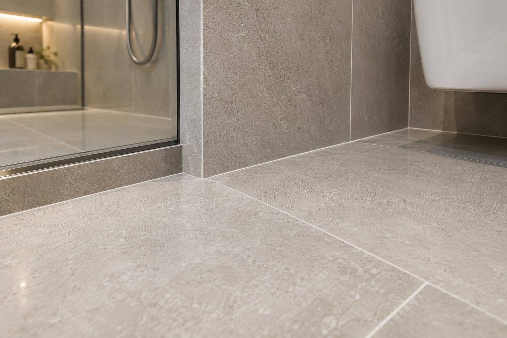
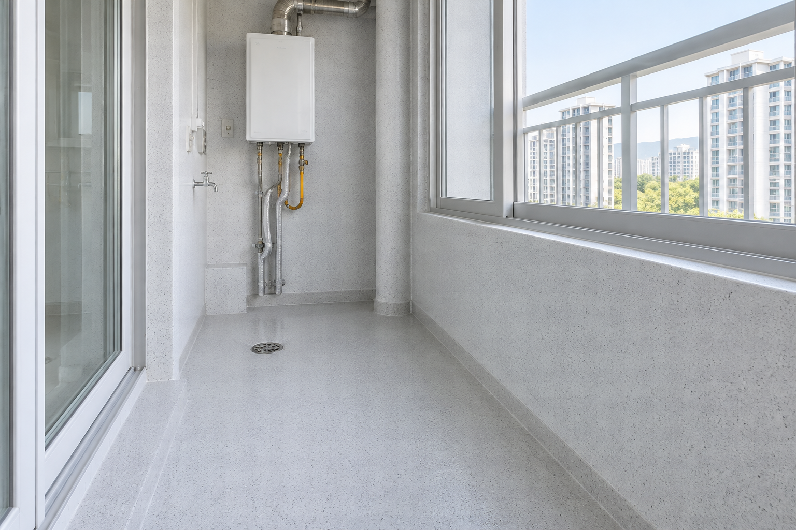
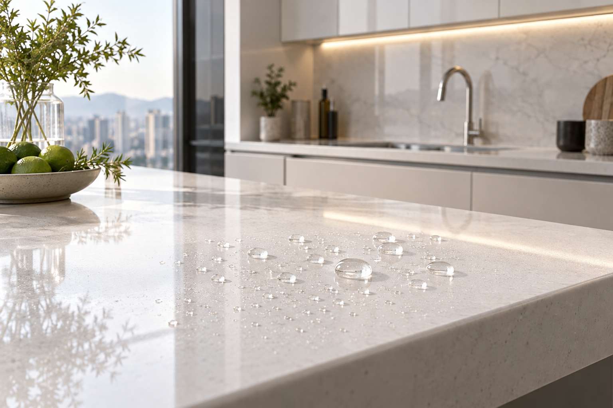

입주청소
창틀, 주방, 욕실, 바닥까지 새집 먼지와 공사 잔여물을 공간별 장비와 세제로 제거합니다.
MOVE-IN CLEANING ↗CLEANING · GROUT · ELASTIC · COATING
입주청소부터 줄눈, 탄성코팅, 상판·나노코팅까지. 업체마다 따로 알아보는 번거로움 없이 상담부터 시공, 사후관리까지 한 곳에서 책임집니다.

OUR SERVICES
집의 상태와 입주 일정에 맞춰
필요한 서비스만 선택할 수 있습니다.

창틀, 주방, 욕실, 바닥까지 새집 먼지와 공사 잔여물을 공간별 장비와 세제로 제거합니다.
MOVE-IN CLEANING ↗
욕실, 주방, 현관과 베란다의 오염과 곰팡이를 줄여 관리하기 쉬운 공간으로 만듭니다.
PREMIUM GROUT ↗
베란다와 다용도실 벽면의 결로와 곰팡이 발생을 줄이고 깔끔한 표면을 유지합니다.
ELASTIC COATING ↗
주방 상판과 욕실 유리, 수전의 오염 침투를 줄여 광택과 청결함을 편리하게 관리합니다.
NANO COATING ↗WHY TOTAL CARE
각 분야 전문팀을 하나의 일정으로 연결해 공정 충돌을 줄이고, 상담 창구와 사후관리도 한 곳으로 통합합니다.
WORK PROCESS
상담부터 사후관리까지
한 곳에서 투명하게 안내합니다.
평형, 입주일과 필요한 서비스를 한 번에 확인합니다.
오염도와 벽면, 타일, 상판 상태를 분야별로 점검합니다.
공정 간 간섭이 없도록 최적의 작업 순서를 조율합니다.
각 분야 전문팀이 정해진 기준에 맞춰 작업합니다.
전 공정을 확인하고 관리 방법과 사후관리를 안내합니다.
OUR PORTFOLIO
보내주신 실제 시공사진을 적용했습니다.
사진을 누르면 크게 확인할 수 있습니다.
CUSTOMER REVIEW
FREE ESTIMATE
아파트명, 평형, 입주 예정일과 필요한 서비스를 알려주시면 빠르게 안내합니다.